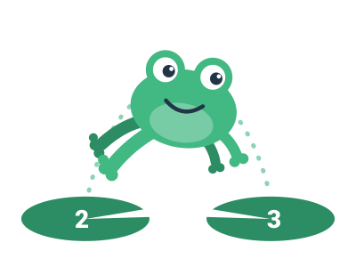
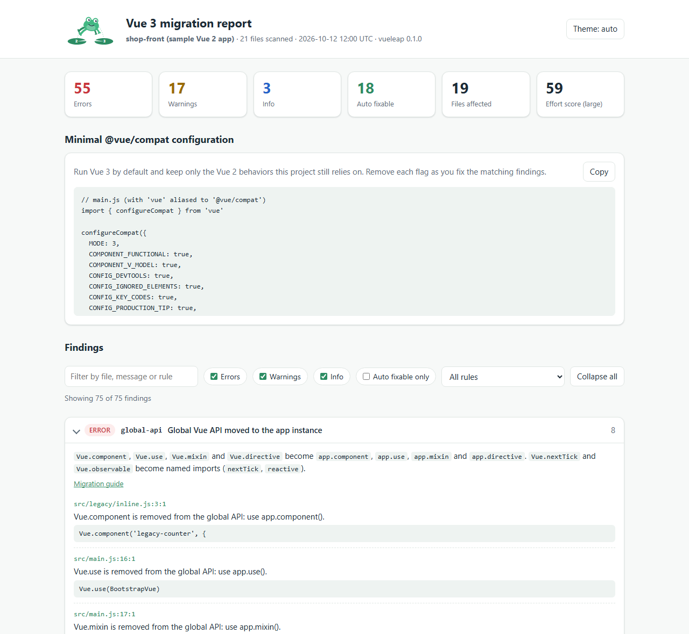

Migrate Vue 2 to Vue 3 with one command
vueleap scans your Vue 2 project and tells you exactly what breaks in Vue 3, file by file and line by line, with the official migration guide link, the @vue/compat flags you need and safe automatic fixes.
# run it once, nothing to install
npx vueleap
# or add it to the project
npm install --save-dev vueleap# run it once, nothing to install
pnpm dlx vueleap
# or add it to the project
pnpm add --save-dev vueleap# run it once, nothing to install
yarn dlx vueleap
# or add it to the project
yarn add --dev vueleap# run it once, nothing to install
bunx vueleap
# or add it to the project
bun add --dev vueleap
Every breaking change, file by file
One command reads templates, scripts, styles and package.json, then groups what breaks in Vue 3 by rule with the line, the compat flag and the official guide link.
~/shop-front $ npx vueleapvueleap v1.0.0 Vue 2 to Vue 3 migration reporterror filters Filters are removed (6) https://v3-migration.vuejs.org/breaking-changes/filters compat: COMPILER_FILTERS, FILTERS src/components/ProductList.vue:5:25 Filter "capitalize" used in a template expression. Call a method or use a computed property instead. src/components/ProductList.vue:5:64 Filter "currency" used in a template expression. Call a method or use a computed property instead. src/components/ProductList.vue:6:69 Filter "capitalize" used in a template expression. Call a method or use a computed property instead. src/components/ProductList.vue:30:5 Local filter "capitalize" is removed: turn it into a method or a computed property. src/legacy/inline.js:7:55 Filter "number" used in a template expression. Call a method or use a computed property instead. src/main.js:26:1 Vue.filter is removed: expose a helper through app.config.globalProperties or import a function.error destroy-hooks beforeDestroy and destroyed are renamed (3) [3 fixable] https://v3-migration.vuejs.org/breaking-changes/#other-minor-changes compat: OPTIONS_BEFORE_DESTROY, OPTIONS_DESTROYED src/components/Modal.vue:27:3 destroyed is renamed to unmounted and is ignored by Vue 3. src/components/ProductList.vue:50:3 beforeDestroy is renamed to beforeUnmount and is ignored by Vue 3. src/mixins/tracking.js:5:3 beforeDestroy is renamed to beforeUnmount and is ignored by Vue 3.error keycode-modifiers KeyCode modifiers are removed (3) [2 fixable] https://v3-migration.vuejs.org/breaking-changes/keycode-modifiers compat: V_ON_KEYCODE_MODIFIER src/components/TheHeader.vue:5:55 KeyCode modifier .13 is removed: use .enter. src/components/TheHeader.vue:5:74 KeyCode modifier .27 is removed: use .esc. src/components/TheHeader.vue:5:99 KeyCode modifier .112 is removed: use the kebab-case key name instead. ... 36 more rule groups in the full reportSummary Files scanned 21 Files affected 19 Findings 75 (55 errors, 17 warnings, 3 info) Auto fixable 18 (preview with --fix, apply with --fix --write) Effort score 59 (large)~/shop-front $ From Vue 2 code that breaks to Vue 3 code that ships
A typical Vue 2 component hides five breaking changes. vueleap finds all of them and rewrites the safe ones for you.
<template>
<div class="products">
<input @keyup.13="search">
<ul>
<li v-for="product in products" :key="product.id">
{{ product.price | currency }}
<product-card :product.sync="selected" />
</li>
</ul>
</div>
</template>
<script>
import { EventBus } from '../event-bus'
export default {
filters: {
currency: (value) => '$' + value.toFixed(2),
},
mounted() {
EventBus.$on('cart:add', this.onAdd)
},
beforeDestroy() {
EventBus.$off('cart:add', this.onAdd)
},
}
</script><template>
<div class="products">
<input @keyup.enter="search">
<ul>
<li v-for="product in products" :key="product.id">
{{ currency(product.price) }}
<product-card v-model:product="selected" />
</li>
</ul>
</div>
</template>
<script>
import { emitter } from '../event-bus'
export default {
methods: {
currency: (value) => '$' + value.toFixed(2),
},
mounted() {
emitter.on('cart:add', this.onAdd)
},
beforeUnmount() {
emitter.off('cart:add', this.onAdd)
},
}
</script>| currency: filters are removed in Vue 3.@keyup.13: keyCode modifiers are gone.:product.sync: the .sync modifier is removed.$onand$off: no more instance event emitter.beforeDestroy: renamed to beforeUnmount.
- Rewritten by
npx vueleap --fix --write:@keyup.enter,v-model:productandbeforeUnmount. - Flagged with a guide: filters to methods and the event bus to mitt.
- Every finding links to the official Vue 3 migration guide.
The exact @vue/compat config, generated
Run Vue 3 today with Vue 2 behavior only where your code still needs it. vueleap prints the smallest configuration for your project, split into runtime and compiler flags.
// Generated by npx vueleap --compat for the sample app.
// 'vue' is aliased to '@vue/compat' in vite.config.js.
import { configureCompat } from 'vue'
configureCompat({
MODE: 3,
COMPONENT_FUNCTIONAL: true,
COMPONENT_V_MODEL: true,
CONFIG_DEVTOOLS: true,
CONFIG_IGNORED_ELEMENTS: true,
CONFIG_KEY_CODES: true,
CONFIG_PRODUCTION_TIP: true,
CUSTOM_DIR: true,
FILTERS: true,
GLOBAL_DELETE: true,
GLOBAL_MOUNT: true,
GLOBAL_PROTOTYPE: true,
GLOBAL_SET: true,
INSTANCE_ATTRS_CLASS_STYLE: true,
INSTANCE_CHILDREN: true,
INSTANCE_DELETE: true,
INSTANCE_DESTROY: true,
INSTANCE_EVENT_EMITTER: true,
INSTANCE_EVENT_HOOKS: true,
INSTANCE_LISTENERS: true,
INSTANCE_SCOPED_SLOTS: true,
INSTANCE_SET: true,
OPTIONS_BEFORE_DESTROY: true,
OPTIONS_DATA_FN: true,
OPTIONS_DESTROYED: true,
RENDER_FUNCTION: true,
TRANSITION_CLASSES: true,
TRANSITION_GROUP_ROOT: true,
V_ON_KEYCODE_MODIFIER: true,
WATCH_ARRAY: true,
})import vue from '@vitejs/plugin-vue'
export default {
resolve: { alias: { vue: '@vue/compat' } },
plugins: [
vue({
template: {
compilerOptions: {
compatConfig: {
MODE: 3,
COMPILER_FILTERS: true,
COMPILER_INLINE_TEMPLATE: true,
COMPILER_IS_ON_ELEMENT: true,
COMPILER_V_BIND_OBJECT_ORDER: true,
COMPILER_V_BIND_SYNC: true,
COMPILER_V_IF_V_FOR_PRECEDENCE: true,
COMPILER_V_ON_NATIVE: true,
},
},
},
}),
],
}MODE: 3 turns everything to Vue 3 and opts in only to what the code still uses.configureCompat, template flags to compatConfig.Everything you need to leave Vue 2 behind
One dependency free command for the whole migration, from the first inventory to the last compat flag.
Scan the whole project
41 checks over templates, scripts, styles and package.json, with file, line and column.
Apply safe fixes
8 codemods that are provably safe, previewed as a diff before anything is written.
Get exact compat flags
The minimal configureCompat and compatConfig for the @vue/compat migration build.
Share an HTML report
One standalone file with filters, light and dark themes and links to the official guide.
Gate it in CI
Use --fail-on error and --json to stop Vue 2 only code from coming back.
Use the API
Call analyze() and fix() from Node.js to build your own migration tooling.
vueleap checks everything from the official Vue 3 migration guide that can be found statically: filters, $listeners, $scopedSlots, the $on/$off event bus, $set and $delete, new Vue() and the global API, Vue.extend, lifecycle and custom directive hook renames, v-model on components, .sync, .native, keyCode modifiers, functional components, inline-template, v-if with v-for, transition classes, render functions, and Vue 2 only dependencies such as vue-router 3, Vuex 3, BootstrapVue, Vuetify 2 and Element UI. See the full breaking changes checklist.
Four steps from Vue 2 to Vue 3
Measure first, run on Vue 3 early, fix with confidence and keep it fixed.
Measure
List every breaking change with file, line, severity and an effort score.
npx vueleapRun on Vue 3 today
Print the minimal @vue/compat flags so the app boots on the migration build.
npx vueleap --compatFix
Preview the 8 safe codemods as a diff, then write them. Fix the rest rule by rule.
npx vueleap --fix --writeKeep it fixed
Fail the build when Vue 2 only code comes back, and drop the compat flags.
npx vueleap --fail-on errorSee a real report
This is the HTML report generated for a small sample Vue 2 shop. Generate yours with npx vueleap --html report.html and share one file with the team.
- Summary cards with errors, warnings and auto fixable findings
- Filters by severity and rule, light and dark themes
- The minimal
@vue/compatconfiguration for the project

Learn the Vue 3 changes that matter
Short, practical guides with before and after code for each breaking change.
Questions
Run npx vueleap to list every breaking change, switch your build to Vue 3 with the @vue/compat migration build using the generated flags, fix the findings (starting with npx vueleap --fix --write), upgrade vue-router, Vuex and UI libraries, then remove the compat flags one by one.
Yes. By default it only reads files. --fix prints a diff and writes nothing unless you add --write, and it never touches files outside the project folder.
Yes. Single file components with lang="ts", TSX, Vue 2.7 <script setup> and vue-property-decorator class components are analyzed. Pug templates are skipped with a warning.
No. Vue 2 reached end of life on December 31, 2023 and no longer receives updates from the Vue team.
Ready to leap to Vue 3?
Run it now on your project. Nothing to install, nothing to configure, nothing leaves your machine.
# run it once, nothing to install
npx vueleap
# or add it to the project
npm install --save-dev vueleap# run it once, nothing to install
pnpm dlx vueleap
# or add it to the project
pnpm add --save-dev vueleap# run it once, nothing to install
yarn dlx vueleap
# or add it to the project
yarn add --dev vueleap# run it once, nothing to install
bunx vueleap
# or add it to the project
bun add --dev vueleap